Keep mana available for the whole table round instead of spending it all on your turn. This deck makes expensive activated abilities practical through repeated untaps, cost reduction, and selective copying. Profane Procession is an enchantment: Zirda discounts it, but the creature-only reducers do not. Spend the same mana sources on more turns Seedborn MuseThe central engine and a Game Changer: all your permanents untap during each opponent's untap step. Lands, mana creatures, and artifacts can fund another activation each turn. This gives more opportunities to spend mana; it does not remove activation timing restrictions or generate infinite mana. 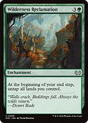Wilderness ReclamationDevelop your board during your main phase, then recover your lands at your end step for interaction and mana sinks. You may float mana in response to the trigger and spend that mana together with the newly untapped lands during that same end step. 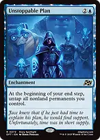Unstoppable PlanRefreshes your mana creatures, rocks, Shorikai, Genesis Engine, and Lithoform Engine at your end step. It does not untap lands and does not trigger on opponents' end steps. Unwinding ClockProvides a second route to repeated activations using artifact mana. It untaps artifacts, including The Enigma Jewel and Shorikai, Genesis Engine, but not ordinary lands, enchantments, or nonartifact mana creatures. It does not produce an extra usable untap when Seedborn Muse already untaps those same artifacts in that step. 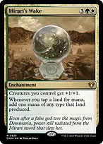Mirari's WakeDoubles the output of lands that produce one mana, making two Profane Procession activations much easier to fund. Its creature boost also helps tokens attack and increases Agatha of the Vile Cauldron's discount. Smothering TitheConverts opposing draws into stored, color-flexible mana when opponents decline to pay. Save Treasures for the white and black requirements of Profane Procession rather than spending them automatically on generic costs. 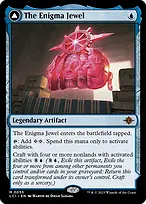The Enigma Jewel // Locus of EnlightenmentTwo colorless mana from a one-mana artifact is excellent here, but it enters tapped and that mana can only pay activation costs. It cannot cast your setup spells or pay Rings of Brighthearth's triggered two-mana payment. Its craft ability is an optional late-game project, not the opening plan. 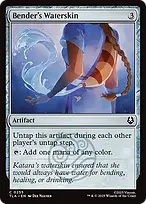Bender's WaterskinRepeatedly supplies a colored mana on opponents' turns even without Seedborn Muse. This helps meet the colored costs that activation reducers cannot remove. Bloom TenderCounts the actual colors of your permanents. Kenrith, the Returned King is white, despite his five-color identity; he does not make this creature tap for all five colors by himself. 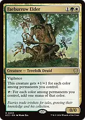Faeburrow ElderAnother mana creature whose production grows as you establish different-colored permanents. Kenrith's red ability can give it haste so it contributes immediately. 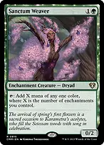Sanctum WeaverProduces mana based on your enchantment count. The enchantment creature tokens from Heliod, God of the Sun increase that count, so token production also grows your future mana output. Make each activation cheaper 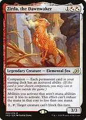Zirda, the DawnwakerA card in the ninety-nine, not the companion. It discounts nonmana activated abilities broadly: Profane Procession costs {1}{W}{B} to exile, its transformed land costs {W}{B} and tap to deploy a captured creature, and Lithoform Engine's ability-copy activation costs {1} and tap. 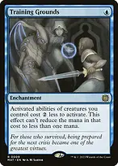Training GroundsDiscounts creature abilities, including Kenrith, Thrasios, Triton Hero, and Walking Ballista. It does not discount Profane Procession, ordinary artifacts, or an uncrewed Shorikai, Genesis Engine. 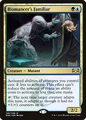Biomancer's FamiliarRedundant creature-ability reduction. Combined with Training Grounds, Kenrith's draw and reanimation abilities can cost just {U} and {B}, respectively; Thrasios's ability still costs at least one mana. 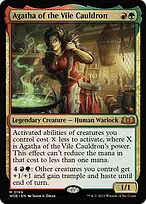Agatha of the Vile CauldronKenrith can put counters on Agatha to enlarge her discount. Her own activation pumps your other creatures and grants trample and haste, giving the deck a combat finish when Kenrith is unavailable. Only generic mana is reduced. Colored symbols, tapping, sacrifices, and timing restrictions still apply. The minimum-one-mana wording does not let you eliminate a remaining colored requirement. Copy the activations that justify it 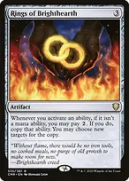Rings of BrighthearthAdds a second Profane Procession exile for an extra {2}, or copies the transformed land's deployment ability without tapping it again. Choose different creatures to deploy when copying the land ability. The extra payment belongs to a triggered ability, so Zirda does not reduce it. Do not pay two to copy a Kenrith activation you could simply activate again for one. 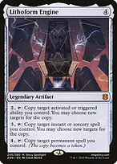Lithoform EngineCopies an activated ability on the stack and can change its targets. With Zirda, copying costs just one mana and tapping; Seedborn Muse or Unwinding Clock refreshes it on opposing turns. Its other abilities can copy spells, but preserving interaction mana often matters more. 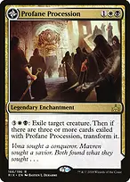Profane Procession // Tomb of the Dusk RoseThe front has no tap cost, so you can activate it repeatedly whenever you have priority and mana. With Zirda, six appropriately colored mana can pay for two separate exiles. After three cards remain exiled with it, it transforms; it is not an unlimited permanent exile engine. To capture more than three cards, announce that you retain priority and put additional Profane Procession activations on the stack before the transformation resolves. Already-pending activations still exile their targets after it transforms and do not flip it back. A copied activation with two cards already captured can similarly exile a third and fourth creature if the two targets remain legal. The transformed land deploys captured creatures under your control. Seedborn Muse untaps it each opposing turn; Unwinding Clock does not untap it because it is a land, not an artifact. The land has a finite supply of captured cards. Exiled tokens do not count toward three captured cards. Commanders whose owners move them out of exile will not be available to steal later. If Profane Procession leaves and returns, the new permanent cannot retrieve the old object's captured cards. Convert spare mana into a finish 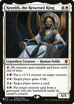Kenrith, the Returned KingSupplies a sink from the command zone: draw into answers, rebuild your creatures, gain life when needed, and turn tokens into hasty trampling attackers. His reanimation returns creatures under their owners' control, so it does not steal opposing graveyard creatures. 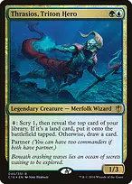Thrasios, Triton HeroTurns generic mana into cards or land development, keeping the deck functional when Kenrith is unavailable. Creature reducers make him much more efficient, and additional lands increase the value of Wilderness Reclamation. Shorikai, Genesis EngineTurns artifact untaps into cards and Pilot tokens. An uncrewed Vehicle can activate immediately without creature summoning sickness. Do not crew it merely to gain a creature-only discount; doing so exposes it to creature removal, and minimum-cost reducers still leave its one-mana activation costing one. Luminarch AscensionOnce charged, produces 4/4 flying Angels at instant speed. Zirda reduces each activation to {W}. Fetchland payments and other life loss on an opponent's turn prevent that turn's quest counter; gaining life afterward does not undo the loss. 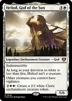Heliod, God of the SunA token sink that works without waiting for quest counters. Zirda reduces each Cleric to {W}{W}, and those enchantment tokens grow Sanctum Weaver's output. Training Grounds and the other creature-only reducers help Heliod only while devotion makes him a creature. Shalai, Voice of PlentyProtects you and your other creatures from targeted effects while offering repeatable team counters. Untappers let you grow a board across opponents' turns before giving it haste and trample with Kenrith. 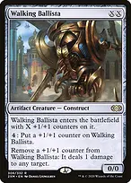Walking BallistaProvides finite repeatable removal and a direct-damage finish. Use its own discounted counter-adding ability or Kenrith's green ability, whichever is cheaper. Removing counters is free, but replenishing them still consumes mana. If casting it normally, pay enough for it to survive entering. Finale of DevastationEarly, finds the missing creature engine. At X=10 or more, it gives your existing team +X/+X and haste; Kenrith can add trample to turn a token board into a table-threatening attack. This is a finish from accumulated resources, not an infinite-mana line. Draw without relying on the commander Esper SentinelTaxes the first opposing noncreature spell each turn. Kenrith's counters and Mirari's Wake increase the amount opponents must pay, keeping this early draw source relevant later. Sylvan LibraryImproves your own draw steps while you assemble an untapper and a useful sink. Extra cards cost life; choose them deliberately rather than treating the deck's incidental lifegain as unlimited. Mystic RemoraBuys cards during spell-heavy openings. Let it go when its upkeep would prevent mana development or leave you unable to answer a threat. Archivist of OghmaOpposing fetches and tutors supply cards without tapping out on your own turn. Its lifegain is useful, but cannot repair a turn of lost life for Luminarch Ascension. 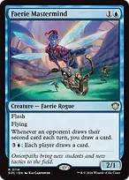Faerie MastermindRewards opposing extra draws and offers a discounted group-draw activation. Be selective: its activated ability gives opponents resources too. When an opponent has already drawn once that turn, making them draw again also triggers your extra draw. 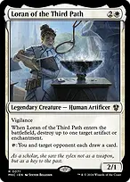Loran of the Third PathRemoves an artifact or enchantment on entry, then becomes a repeatable political draw source with Seedborn Muse. Give the extra card to the player least likely to turn it into a win. Protect the machinery and stop urgent threats Grand AbolisherHelps you establish engines and make your finishing attack during your turn. It does not protect activations taken during opponents' turns. 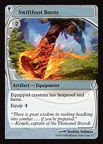Swiftfoot BootsUsually protects Seedborn Muse or Zirda before protecting Kenrith. Haste also turns newly cast mana creatures into immediate resources. Teferi's ProtectionThe third Game Changer preserves your board and life total through a major threat. Phased-out permanents are unavailable until they phase back in, so this is survival rather than a way to keep activating through a wipe. Heroic InterventionProtects permanents against destruction and targeted effects. It does not stop exile sweepers, forced sacrifices, or toughness reduction. 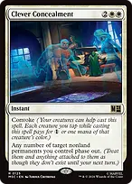Clever ConcealmentTokens can convoke this to phase out selected nonland engines. It can save creatures from Toxic Deluge and other effects indestructible cannot handle, but cannot protect lands. 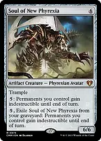Soul of New PhyrexiaA repeatable indestructibility sink that gets cheaper with creature reducers while on the battlefield. From the graveyard, Zirda can reduce its activation, but Training Grounds and Biomancer's Familiar cannot; it is a creature card there, not a creature you control. Veil of SummerProtects an important spell from counters and answers targeted blue or black interaction. It does not stop an overloaded bounce spell that has no targets. Dovin's VetoReserve this for an opposing win or a noncreature spell that would remove several engines. It cannot counter a creature spell or an activated ability. Arcane DenialBroad, inexpensive protection when another spell must be stopped. The delayed cards help the opponent rebuild, so do not spend it on harmless value. Swan SongA one-mana answer that leaves resources available for your sinks. The Bird can attack, so remember that it may delay Luminarch Ascension. 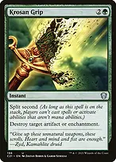Krosan GripClears artifacts or enchantments shutting off your abilities. Split second stops most spell and activation responses while it is on the stack. 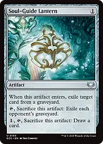Soul-Guide LanternKeeps opposing graveyards manageable without suppressing your own Kenrith reanimation. Its mass-exile activation costs no mana, so leave it ready against a graveyard win. Toxic DelugeAn emergency reset when targeted exile is too slow. It also kills your mana creatures and reducers; rebuilding from your surviving lands and enchantments is the recovery plan. 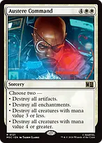Austere CommandChoose its two modes around the actual board. This deck uses artifacts, enchantments, and creatures, so no pair of modes is automatically one-sided. Find what is missing Eladamri's CallFind Seedborn Muse when mana refresh is missing, Zirda when a noncreature sink is too expensive, or Shalai when a key creature needs protection. Getting another payoff is lower priority when you cannot fund the first one. Idyllic TutorFinds Profane Procession, Wilderness Reclamation, Training Grounds, or a token engine. Match the choice to the bottleneck: mana, efficiency, an answer, or a finish. 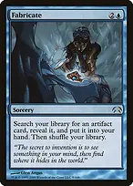FabricateFinds Lithoform Engine for copying, Unwinding Clock for an artifact-heavy board, Shorikai for draw, or Walking Ballista for a finisher. The Enigma Jewel is useful when restricted activation mana is enough. Eternal WitnessRecovers a destroyed engine or spent answer. Kenrith can bring Witness back after it dies to recover another card; this deck has no dedicated sacrifice loop to repeat that indefinitely. What to keep in an opening hand and how to sequence Keep three usable lands, early ramp, an inexpensive answer, and either card draw or a useful engine. A strong example is Command Tower, Savannah, Underground Sea, Birds of Paradise, Nature's Lore, Swords to Plowshares, and Profane Procession. A hand containing several expensive sinks and no ramp is a mulligan even if the individual cards look powerful. Nature's LorePrioritize green development and the white/black access needed for Profane Procession. This finds lands with the Forest type, including appropriate dual lands; it does not require a basic. 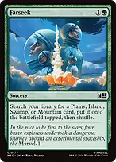FarseekFinds typed dual lands to supply missing colors, but its land enters tapped. Plan that turn's interaction before committing the mana. 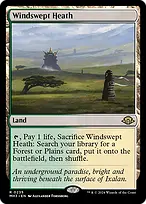Windswept HeathCan find typed duals rather than just basics. Early fetches should establish the colors you need now; fetch during your own turn when you are trying to charge Luminarch Ascension. Develop mana first, then put one useful sink and one efficiency engine to work. Kenrith need not be your first five-mana play if Seedborn Muse will unlock more activity immediately. On opponents' turns, reserve mana for the threat that would beat you. If nothing requires an answer, use the remaining mana near the end of the turn before your next untap opportunity. Do not spend all your white or black mana on cards and lose access to the exile ability. When the board is stable, start making tokens or counters instead of drawing indefinitely. Finish with Kenrith's haste and trample, a large Finale of Devastation, or finite Walking Ballista damage. Keep protection available for the attack that matters.